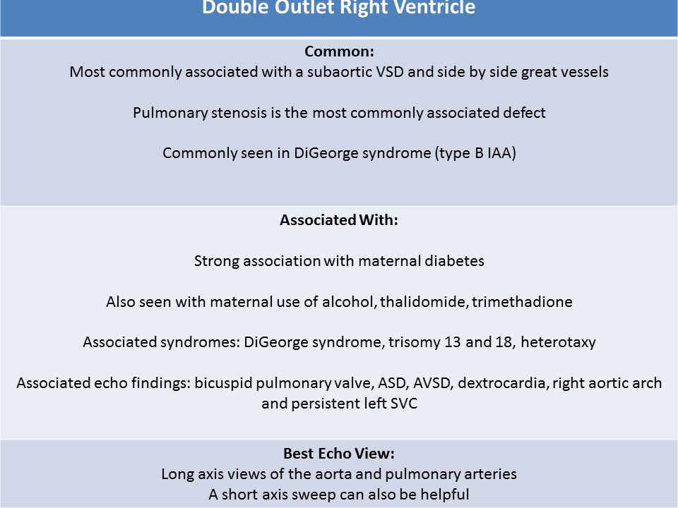
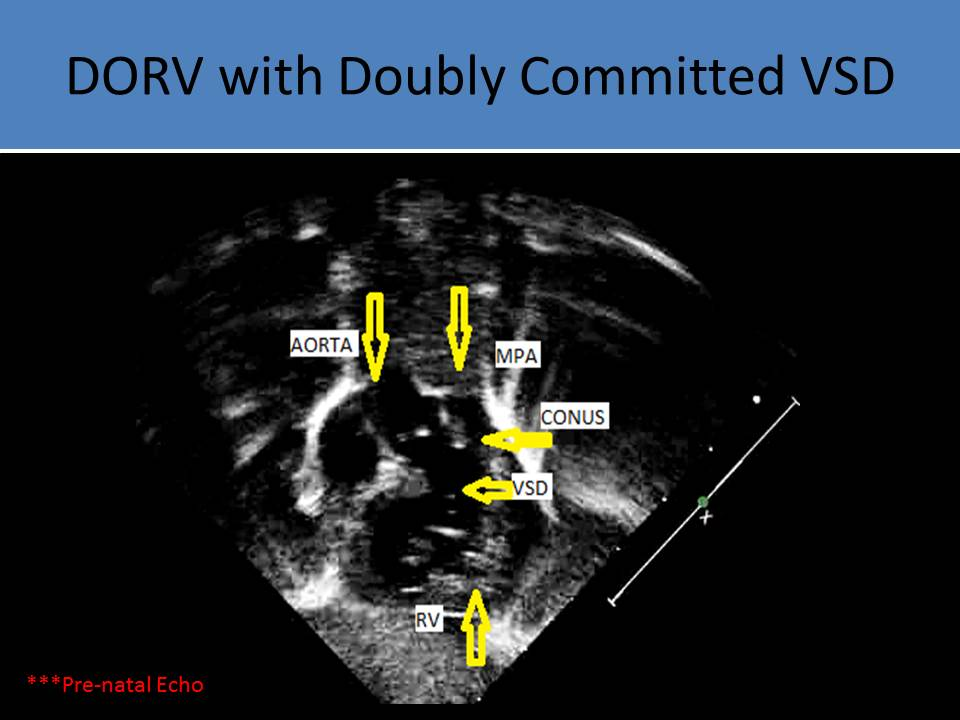
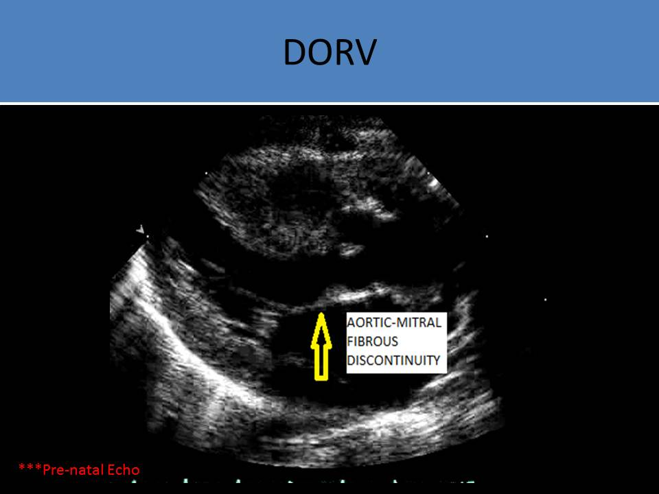

.jpg)
Double Outlet Right Ventricle
General Information:
- Caused by abnormalities of tissue migration
- Both great arteries arise from the morphological right ventricle or predominantly from the right ventricle
- More than 50% of the aorta (and pulmonary artery) arise from the morphological right ventricle
- Most commonly associated defect is pulmonary stenosis (70%)
- Commonly associated with ventricular septal defect, usually inlet type (subaortic)
- Usually, atrioventricular valves are normal
- Occasionally, one of atrioventricular valves can be hypoplastic or stenotic
- Straddling of atrioventricular valve can be seen
- May be associated with heterotaxy
- Associated with mitral hypoplasia, left ventricular hypoplasia
- Aortic-mitral fibrous discontinuity
- The position of conal septum ( conus=muscle) is related to the development of the narrowing of subpulmonic or subaortic narrowing
- Associated with maternal diabetes
- Up to 40% associated with chromosomal defects: DiGeorge syndrome, Trisomy 13 and 18
- Will be cyanotic at birth and requires administration of Prostaglandin E
- Fontan procedure can be used to correct the defect

Location of VSD:
- Subaortic
- VSD is located closer to the pulmonary valve than aortic valve
- most common DORV type
- perimembranous type VSD associated with malalignment (anterior or posterior) of the septum
- associated with pulmonary obstruction, ASD, LSVC, mitral abnormalities
- Without pulmonary stenosis, physiology is similar to TOF
- Subpulmonic
- VSD is located closer to the pulmonary valve than aortic valve
- associated with the aortic obstruction (conal septum is malaligned to cause subaortic narrowing)
- physiology is similar to D-TGA (oxygenated blood pumped into the left ventricle)
- associated with aortic hypoplasia, COA
- Doubly committed
- VSD is located close to both semilunar valves
- very rare
- usually no association with aortic or pulmonary obstruction
- Remote
- VSD is away from the great arteries
- related with inlet VSD
- Normally related great arteries: aorta is posterior and to the right of the pulmonary artery
- Mitral and aortic valve discontinuity - conus (muscle) seen between the mitral valve and the aortic valve
- Aorta is anterior and to the right of the pulmonary artery (d-malposed great arteries)
- Aorta is anterior and to the left of the pulmonary artery ( l-malposed great arteries)
- Aorta is anterior and side-by-side with the pulmonary artery
- Coni (two conus) seen under both great arteries
- Most common seen with DORV: subaortic VSD with side by side great vessels
- VSD or side-by-side type: subaortic VSD with side by side great vessels (#1)
- Fallot type: subaortic or double committed VSD and pulmonary stenosis
- Taussig-Bing type: DORV with subpulmonic VSD, the relationship of great arteries is side by side; associated with arch hypoplasia or COA
- Non-committed VSD type: DORV with a remote VSD
- Four chamber view: normal
- First evaluate the relationship of the great arteries and then the VSD position
- Long axis views of the aorta and pulmonary artery preferred for diagnosis
- Parallel relationship of great arteries identified in OB ultrasound
- both vessels originate over the right ventricle = DORV
- aorta and pulmonary artery connected to separate ventricles = transposition
- Identify the origin of aorta and pulmonary artery
- Identify the location of VSD
- Identify the location of associated aortic or pulmonic obstruction
- Three vessel view can be used to confirm antegrade flow is present in both great arteries
- With pulmonic obstruction, identify the direction of the patent ductus arteriosus
- With aortic obstruction, assess possible aortic coarctation or interrupted aortic arch
- Differentiated from TOF by evaluating aortic position related to VSD
- >50% of aorta over the left ventricle = TOF
- >50% of the aorta over the right ventricle = DORV

DORV with subpulmonic VSD, bilateral coni underneath the great vessels, the relationship of great arteries is side by side
The video displays double outlet right ventricle with d-malposed great vessels. Both aorta and pulmonary emanate from the right ventricle. The aorta is to the right of the main pulmonary artery and there is side by side, parallel relation ship of great vessels.

Double Outlet Right Ventricle - Taussig-Bing